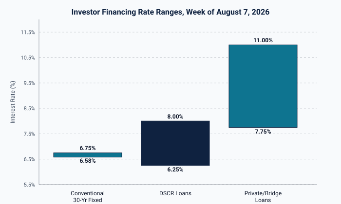

DSCR Loan Rates Hold at 6.25%-8% as Conventional Mortgages Slip Below 6.6%

Mortgage rates moved lower again this week. The average 30-year fixed rate stood at 6.58% on Friday, August 7, 2026, according to Zillow data cited by Yahoo Finance, while Bankrate's survey for the same date put the average at 6.75%. Both trackers point to the same trend: rates have been drifting down ahead of the July jobs report, giving conventional borrowers a modest opening.
DSCR loans have not followed at the same pace. Rate surveys from OfferMarket and Home Abroad show DSCR loan pricing in August 2026 ranging from 6.25% to 8.00%, with well-qualified borrowers landing in the low-to-mid 6% range. Sistar Mortgage's August estimate puts the typical DSCR band at 6.5% to 8%. That keeps DSCR pricing roughly 0.5 to 2 percentage points above conventional financing, in line with the spread investors have seen through most of the year. For a rental property deal, that gap is real money over a 30-year term, and it is the first number worth checking before a lender conversation starts.

Private and bridge capital tell a steadier story. Data compiled by We Lend and Stormfield Capital shows 2026 bridge loan rates generally spanning 7.75% to 11%, with the strongest borrowers seeing pricing near the low end and higher-leverage or higher-risk deals pushing toward the top. SOFR has stabilized near 5.3%, and private lender spreads have compressed to roughly 350 to 650 basis points over that benchmark, a more predictable pricing environment than bridge lenders have offered in recent years. Most bridge quotes still carry 1.5 to 3 origination points on top of the rate, which matters as much as the headline number when comparing offers.
Taken together, the spread between conventional, DSCR, and bridge financing is wide enough this week that the choice of loan type is doing as much work on total deal cost as the property's own numbers. A deal that pencils on a 6.6% conventional assumption can look very different once it is underwritten at 7.5% DSCR pricing or 9% bridge pricing with points attached.
Rate spreads this wide will not last indefinitely. As conventional pricing continues to drift and private lender spreads keep compressing, the gap between financing types is likely to narrow again before year end. For now, investors and lenders evaluating deals this week should treat the spread itself as a data point, not just the headline rate on whichever loan type they reach for first.